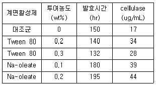
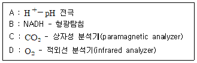
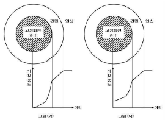
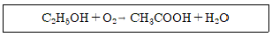
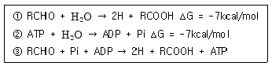
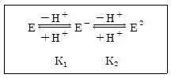

바이오화학제품제조기사 (2010-05-09 기출문제)
1과목: 미생물공학
1. 아가로스 겔 (agarose gel)상의 DNA를 니트로셀룰로오스막 (nitrocellulose membrane)으로 이동시키는 기술을 무엇이라 하는가?
- 동향 전달 (Eastern transfer)
- 서향 전달 (Western transfer)
- 남향 전달 (Southern transfer)
- 북향 전달 (Northern transfer)
(정답률: 80%)

2. 방향족 화합물인 Anthranilic acid를 기질로 하여 Candida속 효모에 의해서 발효생산되는 아미노산은?
- 트립토판 (tryptophan)
- 트레오닌 (threonine)
- 이소류신 (isoleucine)
- 글루탐산 (glutamic acid)
(정답률: 80%)
3. 탄소원과 에너지원 모두 유기물을 사용하는 미생물은?
- chemoorgano heterotroph
- chemoorganotroph
- heterotroph
- chemoorgano autortroph
(정답률: 85%)
4. 미생물 배지의 멸균시 일반 오토클레이브(autoclave) 적용 온도에 가장 가까운 것은?
- 35℃
- 77℃
- 121℃
- 176℃
(정답률: 94%)
5. Trichoderma viride로부터 cellulase를 생산하기 위하여 플라스크 회분배양을 행하고 있다. 계면활성 제가 생산성에 미치는 영향을 조사하기기 위하여 다음 표와 같이 실험하였다. 발효 생산성을 최대화하기 위해서는 어떤 계면활성제를 어떤 농도로 첨가하여야 하는가?

- Na-oleate 0.2%
- Na-oleate 0.1%
- Tween 80 0.2%
- Tween 80 0.3%
(정답률: 79%)
6. Micrococcus glutamicus 를 biotin 과잉배지에 배양시 glutamic acid의 생산이 감소하는 현상을 제가하기 위해서 배지에 첨가하는 물질이 아닌 것은?
- Tween 40
- Palmitic acid
- Oleic acid
- Penicillin G
(정답률: 63%)
7. 1×10-6으로 희석하여 0.1mL을 도포한 한천배지에서 30개의 미생물 군집(colonies)이 얻어졌다면 희석 전배양액 속에는 mL당 얼마나 많은 미생물이 존재하는가?
- 3×106
- 3×107
- 3×108
- 3×109
(정답률: 55%)
8. 회분살균법과 비교한 연속식 배지 살균법의 특징에 해당하는 것은?
- 자동화가 어렵다
- 증기 유입량의 변동이 심하다.
- 운전주기 및 살균 시간을 줄일 수 있다.
- 설비투자가 저렴하다.
(정답률: 81%)
9. 전분의 액화(liquefaction)에 가장 널리 이용되는 효소는?
- 알파 아밀라아제 (α-amylase)
- 글루코아밀라아제 (glucoamylase)
- 베타아밀라아제 (β-amylase)
- 글루코스 이소머라아제 (glucose isomerase)
(정답률: 79%)
10. 산업효소와대표적생산균주의 연결이 틀린것은?
- 알파 아밀라아제 - 고초균(Bacillus subtilis)
- 셀룰라아제 - 효모(Saccharomyces cerevisiae)
- 미생물 레넷 - 뮤코속 진균(Mucor pusillus)
- 포도당 이성화 효소 - 방선균(Streptococcus cinereus)
(정답률: 63%)
11. 중합효소연쇄반응(polymerase chain reaction, PCR)을 이용하여 어떤DNA를 복제하는데 1분이 걸린다. 5분 동안 복제하면 몇 개의 분자가 되겠는가?
- 4
- 8
- 16
- 32
(정답률: 93%)
12. 집적배양법(enrichment culture)을 가장 잘 설명하는 것은?
- 분리원에서 다수의 불특정균을 중점 배양하는 방법
- 분리원에서 소수의 목적균에만 유리한 조건으로 배양하는 방법
- 미생물이 잘 자라지 않을 때 영양원을 풍부하게 하여 배양하는 방법
- 생육속도가 빠른 균을 분리하는 방법
(정답률: 84%)
13. 다음 중 인트론에 관한 설명으로 옳은 것은?
- 유전자의 암호서열 사이에 삽입되어 있는 다양한 길이의 비암호서열을 말한다.
- 리보솜의 표면에 결합되어 있는 NAD가 대부분인 수소전이 효소이다.
- 카로티노이드의 기본구조이다.
- 인터페론의 한 물질이다.
(정답률: 93%)
14. Neuberg 알코올 발효2형식에 해당하는 반응식은?
- 2C6H12O6(+H2O) → 2CH2OHCHOHCO2OH+ CH3COOH + CH3CH2OH + 2CO2
- C6H12O6 → 6H2O + 6CO2
- C6H12O6 → CH3CH2OH + 2CO2
- C6H12O6 → CH2OHCHOHCO2OH+ CH3CHO + CO2
(정답률: 80%)
15. 세탁용 바이오세제에 첨가하는 효소로 다음 중 가장 적합하지 않은 것은?
- 프로테아제(protease)
- 셀룰라아제(cellulase)
- 아밀라아제(amylase)
- 리파아제(lipase)
(정답률: 58%)
16. 방사성동위원소를 함유한 32P-dATP와 DNA polymeraseI을 이용하여 DNA를 label 시키기 위해서는 다음 중 어느 기질을 사용하여야하는가?
- 32P-α-dATP
- 32P-β-dATP
- 32P-γ-dATP
- 32P-α-dATP, 32P-β-dATP, 32P-γ-dATP 모두 가능하다.
(정답률: 70%)
17. Corynebacterium glutamicum 은 2,6-diamino pimelic acid 경로에 의해 lysine을 생합성한다고 한다. Lysine의 과잉생산(overproduction)을 위하여 여러 가지 영양요구주(auxotroph)를 만들었다. 다음의 돌연변이균주(mutant) 중 어느 균주가 lysine 생산성이 가장 높을 것으로 예상되는가?
- Phenylalanin과 tyrosine 요구주
- Isoleucine 요구주
- Homoserine 요구주
- Threonine 요구주
(정답률: 96%)
18. 1mol의 포도당으로부터 정상 젖산발효를 거쳐 젖산을 생산하고자 할 때 이론적으로 몇 mol을 생산할 수 있는가?
- 1
- 2
- 3
- 4
(정답률: 100%)
19. Cellulase에 대한 설명 중 틀린 것은?
- cellulase는 진균류(fungi)만 생산한다.
- cellulase 작용의 최종산물은 포도당(glucose)이다.
- cellulase는 여러 기능을 가진 효소의 복합체이다.
- cellulase는 섬유의 세탁에 쓰이기도 한다.
(정답률: 81%)
20. 산업적으로 생산되는 아미노산의 생산 공정으로 가장 거리가 먼 것은?
- 효소법
- 발효법
- 분화법
- 추출법
(정답률: 91%)
2과목: 배양공학
21. 구연산회로(TCA cycle)에 대한 설명으로 옳은 것은?
- 6탄소화합물인 구연산이 분해되는 과정이므로 모두 6몰의 이산화탄소가 생성된다.
- 회로 중간산물이 생합성에 이용되어 부족한 경우에는 세포가 CO2를 고정화하여 보충하기도 한다.
- 이산화탄소가 생성되는 기작은 산화적 탈탄산화반응과 비산화적 탈탄산반응 2가지 모두 일어난다.
- 해당과정 최종 생성물인 피루브산이 미토콘드리아막을 투과하여 이동한 후에 아세틸 CoA로 전환된다.
(정답률: 60%)
22. 구연산회로에서는 산소가 직접 소모되는 반응이 없지만 산소가 없으면 이 회로가 적동하지 않는 이유에 대한 설명으로 가장 적합한 것은?
- 구연산이 아코니테이트(aconitate)로 변하는 반응에서 나오는 수소를 물로 변환시키기 위해 산소가 필요하다.
- 구연산회로에서 발생하는 NADH로부터 NAD+를 재생하기 위해 산소가 필요하다.
- 구연산회로 중에 발생되어 분리되는 탄소원자를 산화시켜 이산화탄소를 만들기 위해 산소가 필요하다.
- 숙신산을 생성하는 반응에서 GDP를 GTP로 변환시키는데 산소가 필요하다.
(정답률: 93%)
23. 기질수율 Yx/s가 0.4g/g인, Candida utilis를 120g/L의 포도당이 함유된 50L 배양액에 125g의 종균을 접종하고 배양하였을 때 예상되는 최대균체질량은 몇 g인가?
- 50.5
- 55
- 2525
- 2545
(정답률: 69%)
24. 다음 중 2개 이상의 발효조를 연속적으로 연결한 2단 발효조를 사용할 때 얻을 수 있는 가장 큰 장점은?
- 기질의 소비 속도를 증가시킬 수 있다.
- 기질 소비에 대한 균체 생산량을 증가 시킬 수 있다.
- 주어진 기질 농도에서 균체의 증식 속도를 증가 시킬 수 있다.
- 균체 증식과 대사산물의 생산을 각각 조절할 수 있다.
(정답률: 89%)
25. 동물세포 배양에서 공기부양식 생물반응기 (air lift bioreactor)의 특징이 아닌 것은?
- 탱크교반형 생물반응기보다 운전비용이 많이 든다.
- internal loop 또는 external loop 형식이 있다.
- 전단응력 발생이 탱크교반형 생물반응기보다 낮다.
- 대규모화(scale-up)에 한계가 있다.
(정답률: 70%)
26. 한 화합물을 산화시킬 때 산소로 전달되는 전자를 가용전자라 한다. C2H5OH와 같은 화학식을 갖는 기질의 가용 전자수는 몇 개인가?
- 12
- 16
- 20
- 24
(정답률: 63%)
27. ATP가 ADP로 분해될 때는 에너지가 발생한다. 이로 인하여 세포에서 이루어지는 것은?
- 살아있는 세포에서 영양물의 수송, 운동, 생합성을 한다.
- 세포의 분해로 생명체가 상실된다.
- ATP에서 NADP를 합성한다.
- 세포막을 구성하는 반응을 한다.
(정답률: 94%)
28. 미생물에 대한 설명 중 옳지 않은 것은?
- 운동성이 있는 미생물은 운동에 필요한 flagella 와 cilla를 갖는다.
- 많은 미생물이 세포표면에 다당류로 이루어진 capsule이나 slime을 갖고 있다.
- 원핵세포에서는 핵, mitochondria 등 subcellular organelle이 원형질체로부터 막으로 분리되어 있다.
- Mycoplasma를 제외한 많은 세균의 표면에는 결정형의 단백질로 이루어진 S-layer가 있다.
(정답률: 83%)
29. 효모를 이용한 고가의 재조합 단백질을 생산 시에 세균(bacteria)에 의한 오염을 막기 위해 사용할 수 있는 항생제로서 세포벽 합성을 저해하는 것은?
- 니스타틴(Nystatin)
- 페니실린(Penicillin)
- 앰포테라이신 B(Amphotericin B)
- 싸이클로헥사마이드(Cycloheximide)
(정답률: 100%)
30. 호기성과 혐기성조건에서 모두 생장하는 것은?
- 편성호기성균
- 미호기성균
- 편성혐기성균
- 통성혐기성균
(정답률: 81%)
31. 고박테리아(archaebacteria)와 진정박테리아 (eubacteria)의 차이점이 아닌 것은?
- 현미경 관찰로 구분이 확연하다.
- 진정박테리아는 펩티도글리칸을 가진다.
- 세포질막의 지질조성이 매우 다르다.
- 리보솜 RNA의 염기서열이 서로 다르다.
(정답률: 86%)
32. 회분배양에서 지연기를 단축하는 방법으로 옳은 것은?
- 종균배지와 발효배지의 성분을 완전히 다른 조성으로 만든다.
- 종균의 활성도를 높이고, 접종량을 증가시킨다.
- 종균의 배양 상태는 균체 농도가 최대값에 도달한 정지기의 것을 사용한다.
- 종균배양액과 같은 pH값이 되도록 발효 배지 조제시 pH를 조절한다.
(정답률: 83%)
33. 미생물이 한 분자의 포도당을 해당경로(EM)를 통해 파이루베이트(pyruvatic acid)로 산화시키는 과정에서 얻을 수 있는 에너지량은?
- 1 ATP, 1 NADH
- 1 ATP, 2 NADH
- 2 ATP, 1 NADH
- 2 ATP, 2 NADH
(정답률: 70%)
34. 고정화세포배양에 대한 설명으로 틀린 것은?
- 고정화는 높은 세포농도를 유지할 수 있다.
- 고정화된 세포는 재사용이 가능하다.
- 고정화로서 기질이나 산물의 확산의 제한이 없어 생산성을 높일 수 있다.
- 고정화에서는 높은 희석속도에서 세포가 세출(wash-out) 되는 문제가 없다.
(정답률: 77%)
35. 미생물 발효에서 배지의 한 성분이 미생물에 대한 독성을 가지고 있을 경우 취할 수 있는 배양 방법으로 가장 적당한 것은?
- Fed-batch culture
- Recycle culture
- High density culture
- Repeated batch culture
(정답률: 89%)
36. 유전자 재조합 미생물의 배양에서 높은 플라스미드 안정성을 얻기 위해 취할 수 있는 방법이 아닌 것은?
- 액체 배양법을 사용한다.
- 2단 연속 배양법을 사용한다.
- 항생제 의존성 플라스미드를 사용한다.
- 온도 의존성 플라스미드를 사용한다.
(정답률: 59%)
37. 재조합 미생물의 배양시 재조합 단백질의 발현을 유도할 수 있는 방법이 잘못 짝지어진 것은?
- λPL promotor - 온도 증가 (30℃ → 40℃)
- tac promotor - IPTG 첨가
- trp promotor - 트립토판 첨가
- gal promotor - 갈락토즈 첨가
(정답률: 87%)
38. 진핵세포(eucaryotes)만의 특징이 아닌 것은?
- 단일 염색체로 되어 있음
- 핵막이 있음
- 골지체가 있음
- 소포체가 있음
(정답률: 93%)
39. 대량으로 동물세포를 배양할 때 어려운 점이 아닌 것은?
- 동물세포는 미생물보다 복잡하고 크다.
- 동물세포는 표면에 붙어서 성장한다.
- 동물세포는 번역후 변형능력(post-translational modification)이 좋다.
- 동물세포는 섬세한 플라즈마 막이 있다.
(정답률: 79%)
40. 균체 생산을 위한 배양에서 오며, 이상발효 등 특별한 요인이 없을 때 연속배양과 회분배양의 단위 시간당 이론적 생산성을 비교한 결과로 옳은 것은?
- 비생장속도에 관계없이 연속배양이 높다.
- 비생장속도에 관계없이 회분배양이 높다.
- 비생장속도에 관계없이 회분배양과 연속배양이 동일하다.
- 비생장속도가 높으면 회분배양이 높고, 비생장속도가 낮으면 연속배양이 높다.
(정답률: 66%)
3과목: 생물반응공학
41. 연속생물반응기 중 2차 대사산물의 생산을 위한 가장 적합한 반응기는?
- 유동층 반응기
- 직렬식 다단 교반형 연속반응기
- 재순환 연속반응기
- 고정형 반응기
(정답률: 72%)
42. 동물세포 생물반응기의 설계에 관한 내용으로 옳은 것은?
- 동물세포는 공기 공급시 강한 교반이 이루어지도록 설계한다.
- 동물세포 생물반응기의 설계에서 지지표면 대 부피의 비가 어느 경우에도 가장 중요하 설계인자이다.
- 잘 제어되는 외부 환경조건(온도, pH 등)과 CO2가 보강된 공기의 공급이 이루어지도록 설계한다.
- 세포배양 과정에서 유독한 물질대사 생성물과 백신, 림포카인 같은 유용 생성물이 같이 농축될 수 있도록 설계한다.
(정답률: 93%)
43. 다음 중 효소구성 및 특성에 대한 설명으로 틀린 것은?
- 효소 명명법은 기질명 뒤나 반응명 뒤에 접시마 -ase를 붙인다.
- 효소에 Mg, Fe과 같은 금속 이온이 결합된 경우를 보족인자(prosthetic group)라고 한다.
- 효소에 NAD, FAD과 같은 유기물이 결합된 경우를 보조효소(coenzyme)라고 한다.
- 복합효소의 단백질 부분을 순효소(apoenzyme) 라고 한다.
(정답률: 62%)
44. 다음 중 확산 저항이 가장 큰, 가두기(entrap ment) 방법에 의한 효소 고정화 방법은?
- 격자 가두기 고정화
- 실관막 가두기 고정화
- 미세캡슐 가두기 고정화
- 흡착 고정화
(정답률: 58%)
45. 다음 중 농도를 측정 할 수 있는 성분과 측정 기술이 옳게 연결된 것으로만 나열한 것은?

- A
- A, B
- A, B, C
- A, B, C, D
(정답률: 77%)
46. 공기를 반응기 하부에서 주입하며 교반날개를 이용하지 않는 생물반응기의 특징이 아닌 것은?
- 장치비용이 다른 반응기에 비해서 저렴하다.
- 장치의 구조가 간단하다.
- 에너지 소모량이 적다.
- 호기성 fungi의 배양에 적합하다.
(정답률: 82%)
47. 그림(가)와 (나)는 액상에 녹아있는 기질이 경막 (thin film)을 통해 효소가 고정화 되어있는 구형담체 내부에 전달되면서 나타내는 기질농도를 거리에 따라 도해한 것이다. 다음 설명 중 옳지 못한 것은?

- (가), (나) 모두 경막이 외부물질전달에 대한 저항으로 작용한다.
- (가), (나) 모두 담체내부에 확산저항(diffusion limitation)이 존재한다.
- (가)는 (나)에 비해, 효소의 반응속도가 확산속도보다 크다.
- (가)의 경우, 담체 중심에서는 효소의 활성이 없다.
(정답률: 77%)
48. 연속 교반 흐름 반응기를 이용하여 발효공정을 수행하던 중 거품이 많이 발생하는 문제가 발생되었다. 이에 대한 설명으로 틀린 것은?
- 거품제거를 위해 head space를 없애야 한다.
- 거품 때문에 발효기의 최종생산성이 제한될 수 있다.
- 화학적 표면활성제의 첨가로 거품을 줄일 수 있다.
- 기계적 거품제거기로 거품을 줄일 수 있다.
(정답률: 88%)
49. Bacillus spore 4.2*1012개인 배지용액을 121℃에서 15분간 살균한 결과 1.3×106개의 spore가 살아남았다. 이 Bacillus 포자의 십진감소시간(decimal reduction time) 값은?
- 2.134 min
- 2.304 min
- 2.547 min
- 2.728 min
(정답률: 58%)
50. 일반적으로 반응기 용량이 500m3을 초과하는 경우, 다음 중 대규모화(scale-up)하기에 가장 부적합한 반응기 형태는?
- 교반형(stirred vessel type)
- 유동층(fluidized-bed type)
- 기포탑(bubble column type)
- 막형(membrane type)
(정답률: 82%)
51. 최근에 활발하게 개발되고 있는 반응기로써 반응과 분리를 겸하면서 재순환, 효소의 고정화 등 다양한 형태로 이용되는 생물반응기는?
- 유동층 반응기
- Plug-flow 고정층 반응기
- 회분식 완전 혼합형 반응기
- 막형 반응기
(정답률: 65%)
52. 생물반응기를 대규모화 할 때 반응기의 크기 변화에 따라서 일정한 값을 유지하고자 선택하는 항목으로 가장 거리가 먼 것은?
- 배양액의 단위부피 당 교반에너지
- 배양액의 단위부피 당 산소전달 계수
- 교반날개의 선단속도
- 공기유입속도
(정답률: 81%)
53. 효소의 저해작용 중 Lineweaver-Burk 도표로 나타내었을 때 효소저해제의 농도가 증가함에 따라 그 기울기가 변하지 않는 것은?
- 경쟁적 저해(competitive inhibition)
- 비경쟁적 저해(noncompetitive inhibition)
- 반경쟁적 저해(uncompetitive inhibition)
- 기질 저해(substrate inhibition)
(정답률: 70%)
54. 다음 중 하나 이상의 기질 또는 조절자 결합 부위를 가지고 있는 효소는?
- 산화환원 효소(Oxidoreductase)
- 보조효소(coenzymes)
- 완전효소(holloenzymes)
- 알로스테릭 효소(allosteric enzymes)
(정답률: 78%)
55. 다음 중 세포의 배가시간 Td와 비생장속도 Unet의 관계가 옳은 것은?
- Td = ln 2 / Unet
- Td = Unet / ln 2
- Td = Unet ㆍ ln 2
- Td = 1 / (Unet ㆍ ln 2)
(정답률: 85%)
56. 다음 중 고정화 효소에서 기질 확산이 개입할 때의 반응속도와 확산이 없을 때의 반응속도의 비로 정의되는 것은?
- Thiele 계수
- 유효인자(effectiveness factor)
- Michaelis-Menten 상수
- 시간상수
(정답률: 60%)
57. 에탄올로부터 초산이 생성되는 양론식은 다음과 같다. 초기 100g/L의 에탄올이 포함된 배지에 초산 생성 박테리아를 투입하고 산소를 공급하였더니, 20시간 후에 8g/L의 초산이 생성되었고 이때 잔존에 탄올은 2g/L이었다. 20시간 배양을 통해 에탄올로 부터 얻은 초산의 실제수율은 이론수율(theoretical yield)의 약 몇 %인가?

- 94
- 77
- 61
- 23
(정답률: 54%)
58. 효소를 이온교환수지에 흡착ㆍ탈착시킬 때 고려 할 인자로서 다음 중 가장 중요한 것은?
- pH
- 압력
- 온도
- 효소농도
(정답률: 81%)
59. 다음 중 효소반응의 특성에 대한 설명으로 거리가 먼 것은?
- 분자내 특정한 위치에 반응기를 가지고 있는 기질과 반응한다.
- 특정효소는 특정한 구조를 가진 반응기와 반응한다.
- 기질의 광학구조의 차이에 따라서 효소활성이 달라진다.
- 반응온도가 증가할수록 효소반응속도가 계속 증가한다.
(정답률: 89%)
60. 회분식 생장곡선에서 영양소의 고갈과 부산물의 축적으로 생장속도와 사멸속도가 같아서 알짜 생장 속도(net growth rate)가 0이 되는 단계로, 2차 대 사산물이 주로 생산되는 단계는?
- 지연기
- 지수기
- 정지기
- 사멸기
(정답률: 95%)
4과목: 생물분리공학
61. 회분식 이온교환 평형실험을 수행한 결과 어떤 단백질이 주어진 이온교환수지에서 q = aC/(1+bc) 의 Langmuir 이온교환 평형등온식의 경향을 나타내 었다. q는 평형상태에서 이온교환수지 단위질량당 결합된 단백질의 농도[mg/g]이고 C는 그 때의 액상농도[mg/L]이다. Langmuir 상수 a가 1.2L/g, b가 0.8L/mg이라면 이온교환수지 단위 gram당 이온 교환될 수 있는 단백질의 최대 mg 수는 얼마인가?
- 0.667
- 0.96
- 1.2
- 1.5
(정답률: 37%)
62. 다음 중 고형분 분리속도가 가장 낮은 분리방법은?
- 가압압착여과
- 침강
- 원심분리
- 진공필터여과
(정답률: 86%)
63. 수성이상분계의 층 형성에 주로 사용되는 물질은?
- 알지네이트(Alginate)
- 폴리아크릴아마이드(Polyacrylamide)
- 폴리에틸렌 글리콜(Polyehylene Glycol)
- 한천(agar)
(정답률: 84%)
64. 전기투석은 전기영동(electrophoresis)과 다음 중 어떤 분리 기술의 조합인가?
- 염석(salting out)
- 막분리
- 크로마토그래피
- 원심분리
(정답률: 67%)
65. 등전점(pI)이 6.0인 어떤 단백질이 pH 7.0인 용액에 녹아 있다. 이때 이 단백질 표면의 전기부하 상태에 대한 설명으로 옳은 것은?
- 양성부하와음성부하가 균일하게 분포되어있다.
- 음성부하보다는 양성부하가 많이 존재한다.
- 양성부하보다는 음성부하가 많이 존재한다.
- 전기부하를 띄지 않는다.
(정답률: 76%)
66. 혼합물의 분리에 필요한 에너지가 혼합물의조성에 따를 때 25℃에서 1mol의 2성분계 혼합물을 분리하는데 필요한 최대에너지는 몇 J인가? (단, 분리계는 최대의 열역학적 분리효율을 가지고 있고 이상기체상수는 8.31JK-1mol-1이다.)
- 716
- 1716
- 2716
- 3716
(정답률: 62%)
67. 생체내에서 단백질 합성 후 종종 단백질의 안정성 및 접힘(folding) 효율에 영향을 미치는 변형이 일어나는데 이에 해당되지 않는 것은?
- 가당(glycosylation)
- 포밀화(formylation)
- 이황화결합(disulfide linkage)
- 아세틸화(acetylation)
(정답률: 71%)
68. 박테리아를 바이러스와 분리하려고 할 때 어떤 세공 크기의 분리막을 사용하는 것이 가장 효율적인가?
- 0.2mm
- 0.2um
- 0.2nm
- 2Å
(정답률: 89%)
69. 다음 중 기계적인 세포 파쇄방법이 아닌 것은?
- ball mill법
- homogenization법
- 삼투압 충격법
- 초음파 발생법
(정답률: 83%)
70. 혼합물에서 효소를 분리정제하는 방법으로 가장 적합하지 않은 것은?
- 증류
- 염석
- 한외여과
- 흡착
(정답률: 72%)
71. Hofmeister series는 다음 어느 분리기수에 관계되는 방법인가?
- 추출
- 침전
- 흡착
- 크로마토그래피
(정답률: 31%)
72. 인공투석기는 사람의 내장기관 중 어느 부분에 이상이 있을 때 사용되는가?
- 간장
- 신장
- 심장
- 위장
(정답률: 90%)
73. 미생물의 배양 특성을 이용하여 목적 미생물을 분리하기 위하 배양방법으로만 나열된 것은?
- 액체집적 배양, 한천평판 배양
- 액체 집적 배양, 계대 배양
- 계대 배양, 한천평판 배양
- 액체집적 배양, 한천평판 배양, 계대 배양
(정답률: 87%)
74. 크로마토그래피 담체의 CIP(cleaning in place) 를 위해 주로 사용되는 물질은?
- urea
- NaOH
- Tween 80
- NH4OH
(정답률: 66%)
75. 항생물질, 혈청 등 액체에 용해되어 있는 상태로서 특히 열에 불안정한 물질에 대해 사용하는 건조법은?
- 적외선 복사건조법
- 동결건조법
- 고주파건조법
- 유동층건조법
(정답률: 89%)
76. 발효액 중에서 알코올을 선택적으로 제거하기 위하여 투과증발(pervaporation)법을 이용할 수 있다. 다음 중 투과증발법에 해당하지 않는 것은?
- 진공식 투과증발(vacuum pervaporation)
- 기체흐름식 투과증발(sweep gas pervaporation)
- 가압식 투과증발(pressurized pervaporation)
- 열 투과증발(thermo pervaporation)
(정답률: 57%)
77. 효모나 대장균에 존재하는 효소를 분리정제할 때 다음 중 가장 적합한 온도는?
- -10℃
- 4℃
- 30℃
- 60℃
(정답률: 74%)
78. 페니실린 발효액으로부터 이소아밀아세테이트를 이용하여 페니실린을 추출하려한다. 100mL의 발효액에 10mL의 이소아밀아세테이트를 섞어 pH3에서 충분히 교반시킨 후 상분리를 거쳐 이소아밀아세테이트 상과 물상내의 페니실린 농도를 측정 하였더니 각각 5g/L와 0.2g/L이었다. 이 추출계에서의 분배계수(partition coefficient)는?
- 0.04
- 0.4
- 10
- 25
(정답률: 47%)
79. 발효공정과 분리공정을 결합하는 것과 같은 생물공정 결합의 장점이 아닌 것은?
- 생성물 저해를 감소시켜 반응속도 증가
- 원하는 생성물에 대한 향상된 선택성
- 원래 세포외 생성물을 세포내 생성물로 전환
- 생성물의 변성방지
(정답률: 87%)
80. 발효액으로부터 덱스트란을 정제하는 공정에 사용되는 공정이 아닌 것은?
- 가수분해 공정
- 알코올 침전공정
- 흡착공정
- 분별결정공정
(정답률: 56%)
5과목: 생물공학개론
81. 알데하이드의 산화반응 ①과 ATP의 가수분해반응 ②의 free-energy change가 다음과 같은 때 ③반응의 free-energy change는 몇 kcal/mol인가?

- 0.3
- 14.3
- -14.3
- -0.3
(정답률: 43%)
82. 다음 중 DNA가 갖고 있는 염기가 아닌 것은?
- 아데닌
- 구아닌
- 티민
- 우라실
(정답률: 86%)
83. 제조공정관리에 대한 사항으로 볼 수 없는 것은?
- 당해 작업에 종사하지 아니하는 자의 작업소 출입을 제한하여야 한다.
- 작업 전에 시설 및 기구의 청결 상태를 확인해야 한다.
- 작업 중인 기구에는 제품명과 제조번호를 표시하여야 한다.
- 포장ㆍ표시작업에서 사용하고 남은 표시재료는 반드시 다음 제조번호에 모두 사용해야 한다.
(정답률: 78%)
84. 세포의 분자식이 CH1.84O0.55N0.2일 때, 환원도 (degree of reduction)는?
- 3.98
- 4.07
- 4.14
- 4.20
(정답률: 50%)
85. Pentose-phosphate 경로의 주요 역할에 가장 가까운 것은?
- 생합성을 위한 NADPH를 제공한다.
- 대사에 필요한 Acetyl-CoA를 공급한다.
- 무산소 호흡을 위해 중요한 역할을 한다.
- 산소에너지를 전달하여 ATP를 생산한다.
(정답률: 77%)
86. 제조관리기준서에 포함되는 사항이 아닌 것은?
- 작업원의 수세 등 위생에 관한 사항
- 제조공정관리에 관한 사항
- 시설 및 기기관리에 관한 사항
- 원료관리에 관한 사항
(정답률: 84%)
87. 다음 중 염색질(chromatin)의 구성에 대한 설명으로 옳지 않은 것은?
- DNA와 단백질로 이루어져있다.
- 히스톤은 DNA를 뭉치게 하는 단백질이다.
- DNA는 음전하를 띠고 히스톤은 양전하를 띤다.
- 뉴클레오솜을 구성하는 히스톤단백질은 8종류이다.
(정답률: 80%)
88. 발효조내 baffle의 역할에 대해 가장 옳게 설명한 것은?
- 오염을 방지한다.
- 혼합효과를 높인다.
- 거품생성을 방지한다.
- 세포를 shear로부터 보호한다.
(정답률: 62%)
89. 원심분리 후의 어떤 cell cake은 80wt%의 수분을 함유하고 있다. 여기서 100Kg의 수분을 증발시켜 수분의 함량을 40wt%로 줄였다면, 이 속에 남아 있는 단백질은 몇 Kg인가? (단, 단백질은 세포건조중량의 50%를 차지하고 있다고 가정한다.)
- 10
- 15
- 25
- 30
(정답률: 55%)
90. 다음 이온화된 효소의 세가지 형태 (E, E-, E2-)중에서 E-만이 활성을 나타낸다면 이 효소의 최적반응 pH는? (단, K1, K2는 해리평형상수이다.)

- (pK1 + pK2)/2
- (K1 + K2)/2
- (pK1 - pK2)/2
- (K1 - K2)/2
(정답률: 89%)
91. 축합반응에 의하여 5개 분자의 포도당으로부터 만들어진 올리고당의 분자량은? (단, 포도당의 분자량은 180이다.)
- 810
- 828
- 848
- 900
(정답률: 73%)
92. 단백질 번역과정에서 종결 코돈이 아닌 것은?
- UGG
- UGA
- UAA
- UAG
(정답률: 80%)
93. 유전자재조합 기술에서 외부 DNA조각을 클론하기 위해 벡터를 사용한다. 이때 벡터가 지녀야 할 성질에 대해 잘못 설명한 것은?
- 대장균 내에서의 비자발적인 복제를 유도해야함
- 박테리아의 핵산물질로부터 벡터를 분리 및 정제할 수 있는 선택 표시를 보유
- 벡터 DNA 부분에는 강력하면서도엄격하게 제어 될 수 있는 프로모터 존재
- 숙주세포 속으로 쉽게 도입
(정답률: 85%)
94. 전통적 의미의 발효(Fermentation)에 대한 설명으로 틀린 것은?
- 전자전달계가 없이 이루어진다.
- 무산소상태의 대사과정(anaerobic metabolism)이다.
- 무산소호흡(anaerobic respiration)을 통해 이루어진다.
- 유산(lactic acid)등 유기산의 생성이 pyruvate를 거친 단계적 반응으로 이루어진다.
(정답률: 55%)
95. 제조관리부서 책임자가 이행해야 할 사항이 아닌 것은?
- 품질에 관련된 모든 문서와 절차를 검토하고 승인
- 제품표준서,제조관리기준서 및 제조위생관리기준서운영
- 제조지시서에 의하여 작업지시
- 제조위생관리가 규정대로 되고 있는지를 점검ㆍ확인
(정답률: 73%)
96. 10-8M HCl 수용액의 pH를 옳게 나타낸 것은?
- pH < 7
- pH = 7
- 7 < pH < 8
- pH = 8
(정답률: 60%)
97. 해리평형상수 Ka가 1.6×10-6인 약산의 농도가 10-3M 일 때 약산의 약 몇 %가 해리(degree of ionization) 되는가?
- 0.4
- 1.6
- 4
- 16
(정답률: 40%)
98. 생물 분야에 많이 사용되는 완충용액 가운데 pH 7.0의 완충용액으로 사용하는데 가장 적합한 것은?
- 초산
- 인산
- 트리스(Tris)
- 글라이신(glycine)
(정답률: 63%)
99. 젖산[CH3CH(OH)COOH]에는 몇 개의 비대칭 탄소원자가 있는가?
- 0
- 1
- 2
- 3
(정답률: 70%)
100. 열에 의한 멸균 공정의 유효성을 위하여 치사율 계산에 사용되는 것은 다음 중 어느 미생물의 포자인가?
- Salmonella typhimurium
- Bacillus cereus
- Clostridium subterminale
- Bacillus stearothermophilus
(정답률: 67%)